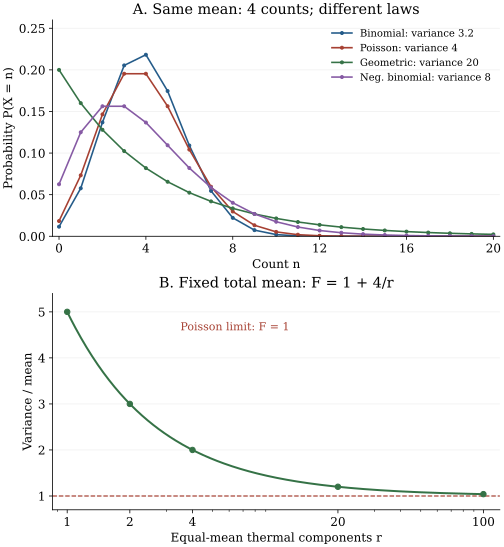

Chapter 1 · Lectures 1–2 · Pilot for author review
Counting fluctuations: discrete distributions and cumulants
A counter registers a mean of four events per observation window. That mean is consistent with independent rare arrivals, occupancy of one thermal mode, or a finite number of independent opportunities. These models predict probabilities of ten or more events of 0.008132, 0.107374, and 0.002595, respectively, for the examples developed here. A threshold alarm designed from the mean alone can therefore be badly miscalibrated. The task is to infer what a count distribution says about its generating mechanism, and what it leaves undetermined.
Based on lecture 1 and lecture 2 of V. Balakrishnan's IIT Madras course. Their order supplies the sequence of models. The equal-mean comparison, counterexamples, numerical laboratory, and exercises here are original teaching constructions. Cumulant identities complete the definition introduced at the end of lecture 2; some are developed further in lecture 3. Two caption tracks were read and fifteen timed still frames inspected; this is not continuous audiovisual transcription.
1.1 Counts, states, and the rule for assigning probability L1 1:31
Let $X$ be the random count in one specified observation window, and let $n$ denote one possible integer value. A probability mass function assigns $p_n=\Pr(X=n)$, with $p_n\geq0$ and $\sum_n p_n=1$. The set of values with positive mass is the support. For an ordinary event counter it lies among the nonnegative integers; a difference of two counters can instead be any integer. A probability model specifies these masses as well as the support. Listing possible outcomes does not make them equally probable.
Two independent fair dice give a small example of the distinction. A detailed outcome is the ordered pair of face values. There are thirty-six such pairs with probability $1/36$ each. The measured score $S$ discards that detail and retains their sum. For scores $s$ from two through seven, the first face can be any of $1,\ldots,s-1$, giving $s-1$ pairs. For scores from eight through twelve, there are $13-s$ pairs. Thus a direct counting derivation gives
$$ \Pr(S=s)=\begin{cases}(s-1)/36,&2\leq s\leq7,\\(13-s)/36,&8\leq s\leq12.\end{cases}\tag{1.1} $$The score seven has six contributing pairs and probability $1/6$, although no individual pair is preferred. A microstate is the detailed configuration; a macrostate records only the chosen coarse observable. Equal probabilities of microstates can produce sharply unequal probabilities of macrostates. Conversely, assuming equal macrostate probabilities would define a different experiment.
Making the dice look identical does not change the result: an unordered pair of distinct faces still collects two ordered outcomes. Quantum particle counting changes the permitted state space through symmetrization or antisymmetrization and also needs an ensemble assigning probabilities to those states. Merely concealing a classical label does not establish that ensemble. Entanglement language alone cannot substitute for the counting rule.
Expanding the square and using $\mathbb E[X]=\mu$ gives $\sigma^2=\mathbb E[X^2]-\mu^2$. Nonnegativity follows from the expectation of a nonnegative square; zero variance means $X=\mu$ with probability one. The two-dice example gives mean seven and variance $35/6$, checked by finite enumeration in the laboratory. Neither the mean nor variance determines all the masses. Our equal-mean counting problem will keep $\mu=4$ fixed while changing the law and its fluctuation mechanism.
1.2 Independent opportunities: Bernoulli and binomial counts L1 13:38
A fixed set of opportunities differs from an unconstrained arrival stream. Let $N$ be a positive integer counting opportunities, and let $B_j$, for $j=1,\ldots,N$, be independent random variables taking the value one with probability $p$ and zero with probability $q=1-p$. Each $B_j$ is a Bernoulli trial. Assume the same $p$ for every trial and set $X=\sum_{j=1}^{N}B_j$. Independence specifies the joint law; equality of the success probabilities specifies identical marginal laws. Both assumptions enter the binomial formula.
A specified sequence with $n$ successes and $N-n$ failures has probability $p^nq^{N-n}$, by independence. Choosing which $n$ positions succeeded gives $\binom{N}{n}$ mutually exclusive sequences. Adding their probabilities proves the mass formula. The binomial expansion gives $\sum_n p_n=(p+q)^N=1$, so it is normalized.
For the mean, linearity of expectation gives $\mathbb E[X]=\sum_j\mathbb E[B_j]=Np$. Since $B_j^2=B_j$, each trial has variance $p-p^2=pq$. Expanding the variance of the sum gives the sum of variances plus twice the sum of pairwise covariances. For two trials, the covariance is $\operatorname{Cov}(B_i,B_j)=\mathbb E[(B_i-p)(B_j-p)]$. Independence makes each covariance between distinct trials zero, leaving $Npq$. This proves the moment statements. ∎
The factor $1-p$ reduces the variance below the mean: the count cannot exceed its fixed number of opportunities. This is a statement about this model, not a universal test of the physical origin of a count. For $N=20$ and $p=0.2$, the mean is four, the variance is 3.2, and $F=0.8$. Its probability of an empty window is $0.8^{20}=0.01152922$. These exact values will be compared with other four-count models.
Generating the factorial moments
Define the probability-generating function of a nonnegative integer-valued $X$ by $G_X(z)=\mathbb E[z^X]=\sum_{n=0}^{\infty}p_nz^n$. The argument $z$ may be complex. Absolute convergence is guaranteed for $|z|\leq1$; extension outside that disk requires the particular law's tail. For a finite-support law the sum is a polynomial. Its coefficient of $z^n$ is the probability of count $n$.
Whenever the corresponding factorial moment is finite, differentiation at one from inside the convergence region gives
$$ G_X(1)=1,\quad G'_X(1)=\mathbb E[X],\quad G''_X(1)=\mathbb E[X(X-1)],\quad \sigma^2=G''_X(1)+G'_X(1)-G'_X(1)^2.\tag{1.3} $$The second derivative generates $X(X-1)$, rather than $X^2$, because differentiating $z^n$ twice brings down $n(n-1)$. Adding the first moment restores the missing $X$. At order $k$, the derivative generates the falling product $X(X-1)\cdots(X-k+1)$, called the kth factorial moment. Derivatives and sums can be interchanged directly for finite support; for the nonnegative infinite series, finite factorial moments justify the limit at one.
For the binomial law, summing the binomial expansion gives $G_X(z)=(q+pz)^N$. Differentiating gives $G'_X(1)=Np$ and $G''_X(1)=N(N-1)p^2$; substitution into (1.3) again gives $Np(1-p)$. The two calculations check different parts of the argument: the sum-of-trials calculation exposes independence, while the generating function exposes how the whole law encodes its moments.
At $p=0$ or $p=1$, the count is deterministic and the variance vanishes, as (1.2) predicts by continuity. If success probabilities differ, the generating function becomes $\prod_j(1-p_j+p_jz)$, not a single binomial power. If trials are correlated, even this product fails. A physical application must identify why its trials have the assumed probabilities and joint law.
1.3 A gas: local fluctuations and the thermodynamic limit L1 31:22
Consider $N$ noninteracting classical particles in a vessel of volume $V$, at a fixed time in a spatially uniform equilibrium state. Choose a subvolume $v$, with $0\lt v\lt V$, and let $X$ count particles inside it. For each particle, the indicator of being inside has probability $p=v/V$. Independence of the particle positions makes their sum binomial. This is a statement about one equilibrium snapshot; it does not assert that snapshots taken arbitrarily close in time are independent.
Write the mean number density as $\rho_{\mathrm{gas}}=N/V$, so its units are inverse volume. Substituting $p=v/V$ into (1.2) gives the derived relations
$$ \mu=\rho_{\mathrm{gas}}v,\qquad \sigma^2=\rho_{\mathrm{gas}}v\left(1-\frac vV\right),\qquad \frac{\sigma}{\mu}=\sqrt{\frac{1-v/V}{\rho_{\mathrm{gas}}v}}.\tag{1.4} $$The mean has no residual volume units. The variance is reduced by the finite-reservoir factor $1-v/V$: when the observation volume becomes the entire vessel, its count is the fixed total $N$, so the variance must vanish. If the subvolume occupies one fifth of a vessel holding twenty independent particles, its count reproduces the running binomial model, with mean four and variance 3.2.
There are two different large-system operations. At fixed fraction $v/V$, increasing the total particle count increases the mean local count and suppresses its relative fluctuation in proportion to $N^{-1/2}$. In the thermodynamic limit, let $N,V$ increase with $N/V=\rho_{\mathrm{gas}}$ fixed. If the observed $v$ is held fixed, its mean $\rho_{\mathrm{gas}}v$ remains finite and its relative fluctuation approaches $1/\sqrt{\rho_{\mathrm{gas}}v}$. It does not vanish merely because the reservoir becomes infinite. The Poisson limit in Section 1.5 makes that distinction explicit.
Interactions can invalidate independent particle positions. For any sum of indicators, the exact variance still equals the sum of individual variances plus twice the pairwise covariance sum. Positive spatial correlations can increase fluctuations; a fixed-total constraint can reduce them. An inverse-square-root scaling argument therefore needs its correlation assumptions, as well as a declaration of which volume grows. Time correlations and dynamics require the process descriptions introduced in chapter 5.
1.4 Waiting failures and thermal occupation L1 37:05
Keep the Bernoulli success probability $p$, but change the experiment: repeat independent trials until the first success. Let $X$ be the number of failures before that success. Its support starts at zero, because the first trial may succeed. The event $X=n$ requires $n$ failures followed by one success, so independence gives $p_n=pq^n$, with $q=1-p$. This is the geometric distribution in the failures-before-success convention. Counting the trial on which success occurs would instead give $X+1$, shifting the mean by one without changing the variance.
Summing $\sum_{n\geq0}p(qz)^n$ gives the geometric series in (1.5). At $z=1$, its value is $p/(1-q)=1$. Differentiation gives $G'_X(z)=pq/(1-qz)^2$ and $G''_X(z)=2pq^2/(1-qz)^3$. Hence $G'_X(1)=q/p$ and $G''_X(1)=2q^2/p^2$. Substitution into (1.3) yields $q^2/p^2+q/p=q/p^2$. Solving $\mu=q/p$ for $p$ gives $p=1/(1+\mu)$, proving the last equality. ∎
The mass function can therefore be parameterized by its mean alone:
$$ p_n=\frac1{1+\mu}\left(\frac{\mu}{1+\mu}\right)^n, \qquad F=1+\mu,\qquad \frac{\sigma}{\mu}=\sqrt{1+\frac1\mu}\quad(\mu\gt0).\tag{1.6} $$The variance grows quadratically at large mean, and the relative fluctuation remains greater than one. For mean four, $p=1/5$, the empty-window probability is 0.2, and the variance is twenty. The probability of ten or more counts is the tail $q^{10}=0.8^{10}=0.10737418$. A broad law can have both many empty windows and a substantial high-count tail while retaining a modest mean.
A single radiation mode
The same law describes a different physical object. A single electromagnetic mode is one independent oscillator degree of freedom of the field, including its spatial pattern and polarization. It is not the collection of every mode sharing one frequency. Let $\varepsilon=\hbar\omega\gt0$ be the energy of one photon in the selected mode, where $\omega$ is angular frequency and $\hbar$ is the reduced Planck constant. The state with $n$ photons has excitation energy $n\varepsilon$. Its zero-point energy is common to all relative probabilities and cancels during normalization.
Assume thermal equilibrium with a bath at absolute temperature $T\gt0$. Write $\beta=1/(k_BT)$, where $k_B$ is Boltzmann's constant. The canonical weight for the number state is $\exp(-\beta n\varepsilon)$. This Boltzmann weighting is the statistical-mechanical model input; the distribution and moments below are derived from it. Set $q_T=\exp(-\beta\varepsilon)$, a dimensionless number between zero and one. Normalization sums a geometric series:
$$ p_n=(1-q_T)q_T^n,\qquad \mu=\frac{q_T}{1-q_T}=\frac1{e^{\beta\varepsilon}-1},\qquad \sigma^2=\mu+\mu^2.\tag{1.7} $$The occupation of this one thermal mode is thus geometrically distributed. The Bose occupation factor is its mean; it is not the probability of finding exactly that number of photons. The broad fluctuations follow from the full sequence of number-state weights. No direct interaction between photons is needed to obtain the excess variance.
For ordinary blackbody equilibrium, matter can absorb and emit photons, so photon number is not a conserved thermodynamic constraint and no independent photon-number chemical potential appears in (1.7). Zero rest mass alone is not a sufficient argument for omitting such a constraint in every model. The thermal model also differs from a waiting-time experiment: sharing a geometric law does not mean photons are produced by successive failed coin tosses.
The single-mode qualification matters quantitatively. Combining independent thermal modes adds their counts and variances. Equal-mean modes produce the negative-binomial law in Section 1.8; unequal occupations generally produce another law. A single-frequency label or a large collection aperture does not establish the required number or equality of independent modes.
1.5 The rare-event limit L1 53:59
Increase the number of independent opportunities while decreasing each success probability. Let $N$ tend to infinity and set $p=\mu/N$, holding a positive mean $\mu$ fixed. For each fixed nonnegative count $n$, rewrite the binomial mass as
$$ \Pr(X=n)=\frac{\mu^n}{n!} \left[\prod_{j=0}^{n-1}\left(1-\frac jN\right)\right] \left(1-\frac\mu N\right)^N \left(1-\frac\mu N\right)^{-n}.\tag{1.8} $$The finite product tends to one, the next factor tends to $e^{-\mu}$, and the final factor tends to one. These are limits at fixed $n$; no large-count Stirling approximation is needed. The resulting masses sum to one by the exponential series. They define the Poisson distribution:
Equation (1.8) proves the pointwise mass limit. Normalization of the limiting sequence ensures that probability has not escaped to arbitrarily large counts. For the generating function, sum $e^{-\mu}(\mu z)^n/n!$ to obtain $e^{\mu(z-1)}$. Its first two derivatives at one are $\mu$ and $\mu^2$. Formula (1.3) then gives variance $\mu^2+\mu-\mu^2=\mu$. ∎
In the running case $\mu=4$, the Poisson empty-window probability is $e^{-4}=0.01831564$, and the variance is four. A finite binomial with twenty opportunities has the same mean but a noticeably narrower law. To quantify the approximation, let $a_n$ and $b_n$ be the masses of two integer-valued probability laws, and define their total-variation distance as $d_{\mathrm{TV}}=\tfrac12\sum_n|a_n-b_n|$.
This distance bounds the absolute error assigned to any event. To prove the bound, write $\delta_n=a_n-b_n$. Normalization gives $\sum_n\delta_n=0$, so the sum of the positive $\delta_n$ equals the absolute sum of the negative $\delta_n$, and each equals $d_{\mathrm{TV}}$. For any set of outcomes $A$, the sum $\sum_{n\in A}\delta_n$ lies between $-d_{\mathrm{TV}}$ and $d_{\mathrm{TV}}$. Thus the two probabilities assigned to $A$ differ by at most $d_{\mathrm{TV}}$. Choosing $A$ to contain exactly the outcomes with $\delta_n\gt0$ attains the bound.
At mean four, the computed distances from the Poisson law are 0.05600005 for twenty trials, 0.01024234 for one hundred trials, and 0.00100498 for one thousand trials. These are numerical comparisons, not a universal convergence-rate theorem.
The ideal-gas thermodynamic limit with fixed observed subvolume satisfies exactly this scaling: $p=v/V\to0$, while $Np=\rho_{\mathrm{gas}}v$ remains fixed. Its local count becomes Poisson, with finite variance equal to that mean. By contrast, a finite radioactive sample with independent decays in a fixed interval gives a binomial law exactly; a Poisson approximation needs many nuclei and small individual decay probabilities. A constant-rate Poisson process is a further temporal model, not a consequence of recognizing one Poisson histogram. Event timing and independence of increments belong to chapter 6.
Equality of mean and variance follows from a Poisson law, but the converse is false. For example, a count taking zero and two with equal probabilities has mean and variance both one yet cannot be Poisson. Inferring a mechanism requires more of the distribution and, when the mechanism concerns time, more than a one-time distribution.
1.6 Coherent-state photon counts L2 3:27
The thermal-mode construction assigns probabilities directly to number states. A coherent quantum state instead starts from complex amplitudes. Only a small amount of quantum notation is needed to derive its count law. Write $|n\rangle$ for a normalized state with exactly $n$ photons in the selected mode. These states form an orthonormal basis: $\langle m|n\rangle$ is one when $m=n$ and zero otherwise. A superposition $\sum_n c_n|n\rangle$ has normalization $\sum_n|c_n|^2=1$; an ideal number measurement has probability $|c_n|^2$ for outcome $n$. This last rule is the quantum-mechanical input.
Define the lowering operator $a$ by $a|n\rangle=\sqrt n\,|n-1\rangle$ for positive $n$, and $a|0\rangle=0$. A coherent state $|\alpha\rangle$ is a normalized eigenstate satisfying $a|\alpha\rangle=\alpha|\alpha\rangle$, with complex dimensionless eigenvalue $\alpha$. Substituting its expansion in number states and comparing the coefficient of $|n\rangle$ gives $c_{n+1}\sqrt{n+1}=\alpha c_n$. Iteration gives $c_n=c_0\alpha^n/\sqrt{n!}$. Normalization fixes $|c_0|^2e^{|\alpha|^2}=1$. Choosing an irrelevant common phase makes $c_0$ real and nonnegative, so
$$ |\alpha\rangle=e^{-|\alpha|^2/2}\sum_{n=0}^{\infty} \frac{\alpha^n}{\sqrt{n!}}|n\rangle, \qquad p_n=e^{-|\alpha|^2}\frac{|\alpha|^{2n}}{n!}.\tag{1.10} $$This derives a Poisson number distribution with mean $\mu=|\alpha|^2$. The same construction appears in Glauber's original treatment, printed page 2769, equations (3.1)–(3.9). The optical model and its measurement rule differ from independent rare classical trials, although their resulting count masses agree. An ideal coherent mode of mean four therefore has the Poisson variance four, rather than the thermal variance twenty.
Number counting alone loses phase information. Replace $\alpha$ by $|\alpha|e^{i\theta}$, where $i^2=-1$ and $\theta$ is a real phase. Every mass in (1.10) remains unchanged because it contains only $|\alpha|$. Moreover, an ensemble formed by randomly selecting such a phase gives the same count probabilities as a fixed coherent state: averaging identical probabilities changes nothing. The phase-averaged ensemble has no fixed phase, so the count law cannot by itself certify the full state. Phase-sensitive measurements would distinguish additional properties.
Real laser output can have extra noise, multiple modes, and a measurement chain that changes observed counts. Equation (1.10) is a statement about the specified ideal state and ideal number measurement. It does not identify every laser with that state or establish coherence from a measured variance-to-mean ratio. The remaining count models provide useful alternatives before any such inference is attempted.
1.7 Adding sources and subtracting backgrounds L2 14:06
A detector may count two unresolved sources together or subtract a reference channel from a signal channel. These operations change the support as well as the moments. Let $X$ and $Y$ be independent nonnegative counts with generating functions $G_X$ and $G_Y$. Their sum has generating function
$$ G_{X+Y}(z)=\mathbb E[z^{X+Y}] =\mathbb E[z^Xz^Y]=G_X(z)G_Y(z).\tag{1.11} $$The factorization is independence expressed at the level of the whole law. At the mass-function level, a total $s$ can be assembled as $(n,s-n)$ for $n=0,\ldots,s$, giving the convolution $\Pr(X+Y=s)=\sum_{n=0}^{s}\Pr(X=n)\Pr(Y=s-n)$. The finite upper limit matters because neither count can be negative. The product in (1.11) automatically incorporates this constraint through its coefficients.
For independent Poisson counts with means $\lambda_+$ and $\lambda_-$, multiplication gives $\exp[(\lambda_++\lambda_-)(z-1)]$. Their sum is therefore Poisson with the sum of the means. Here the lambdas are dimensionless mean counts in the chosen window, not rates; a constant-rate temporal model would multiply each rate by the window duration.
A difference has negative outcomes
Define the signed count $D_c=X-Y$. It can take any integer $d$, so its generating expression is a Laurent series, allowing negative powers of $z$. For nonzero complex $z$, the Poisson expressions give an absolutely convergent series and
$$ \mathbb E[z^{D_c}]=G_X(z)G_Y(z^{-1}) =e^{-(\lambda_++\lambda_-)}e^{\lambda_+z+\lambda_-z^{-1}}.\tag{1.12} $$For a fixed $d\geq0$, write $X=Y+d$ and sum over $Y=j\geq0$. The probability of $D_c=d$ is
$$ e^{-(\lambda_++\lambda_-)} \sum_{j=0}^{\infty}\frac{\lambda_+^{j+d}\lambda_-^j}{(j+d)!\,j!}.\tag{1.13} $$To name this series, define the integer-order modified Bessel function by $I_d(x)=\sum_{j\geq0}(x/2)^{2j+d}/[j!(j+d)!]$ for nonnegative integer $d$, and $I_{-d}=I_d$. Factoring $(\lambda_+/\lambda_-)^{d/2}$ out of (1.13) identifies its argument as $2\sqrt{\lambda_+\lambda_-}$. Negative $d$ follows by exchanging the two counts. Thus, for both means strictly positive,
The convolution sum (1.13) and its exchanged version prove the probability formula. Linearity gives the difference of means without needing independence. For the variance, expand $\operatorname{Var}(X-Y)=\operatorname{Var}(X)+\operatorname{Var}(Y)-2\operatorname{Cov}(X,Y)$, where $\operatorname{Cov}(X,Y)=\mathbb E[(X-\mathbb E[X])(Y-\mathbb E[Y])]$. Independence sets this covariance to zero; (1.9) supplies each variance. ∎
The special-function formula compresses an elementary convolution; no knowledge of its differential equation is needed here. The related generating identity is independently tabulated in NIST DLMF 10.35.1. When one mean vanishes, use the direct difference definition rather than evaluating a ratio with zero denominator. The result becomes a one-sided Poisson law, possibly reflected about zero.
Taking $\lambda_+=7$ and $\lambda_-=3$ produces the running mean four, but variance ten and probability 0.05801782 of a zero difference. Subtracting a background removes its mean and adds its independent noise. In particular, a signed count with zero mean can still fluctuate substantially; dividing its variance by that mean is then undefined. The Fano factor is not a useful universal summary for signed counts.
For arbitrary real constants $a_c,b_c$, the exact identity is $\operatorname{Var}(a_cX+b_cY)=a_c^2\operatorname{Var}(X)+b_c^2\operatorname{Var}(Y)+2a_cb_c\operatorname{Cov}(X,Y)$. The mean is always linear, but variance has this covariance term. Scaled Poisson variables generally have a different support and are not ordinary Poisson counts. The independence assumption, not simply the appearance of a plus or minus sign, licenses dropping the covariance.
1.8 From one thermal component to many L2 40:26
Collect $r$ independent geometric counts with the same success parameter $p$, where $r$ is a positive integer. Their sum $X$ has generating function $[p/(1-qz)]^r$, by (1.11). For a total $n$, the individual nonnegative counts can be arranged in $\binom{n+r-1}{r-1}$ ways: place $r-1$ separators among $n+r-1$ positions to divide $n$ objects into $r$ possibly empty groups. Every arrangement has product probability $p^rq^n$. This proves the negative-binomial distribution:
$$ p_n=\binom{n+r-1}{n}p^rq^n,\quad n\geq0,\qquad G_X(z)=\left(\frac p{1-qz}\right)^r.\tag{1.15} $$The name refers to the negative power in the binomial series, not to negative counts. Its support remains the nonnegative integers. In a sequential-trial interpretation it counts the failures before the rth success. In the thermal interpretation it counts the total occupation of $r$ independent equal-mean modes. The same law again admits different mechanisms.
Adding the geometric means and variances gives $\mu=rq/p$ and $\sigma^2=rq/p^2$. Solving for $p=r/(r+\mu)$ puts the comparison at fixed total mean:
Each component has mean $\mu/r$ and variance $\mu/r+(\mu/r)^2$, by (1.5). Independence adds the $r$ variances, proving (1.16). For the limit, take the logarithm of its generating function: $-r\log[1+\mu(1-z)/r]\to\mu(z-1)$ for fixed $z$ near one. The limiting function is the Poisson generating function (1.9); equivalently, substitution in (1.15) gives the Poisson mass limit at each fixed count. ∎
At total mean four, one mode gives variance twenty, two equal modes give twelve, and four equal modes give eight. One hundred modes give variance 4.16, close to the Poisson value four. Figure 1.1 compares the laws and the fluctuation trend. The limit holds total mean fixed: each mode becomes more weakly occupied as more modes are collected. If each mode's occupation is instead held fixed, both total mean and variance grow with mode count and their ratio remains constant. These are different experiments.

Positive real shape and a different construction
A positive noninteger $r$ can parameterize a valid negative-binomial law without being a literal mode count. To establish this, let the conditional count be Poisson with random positive mean $\Lambda$. Give $\Lambda$ a gamma density $f(\lambda)=(r/\mu)^r\lambda^{r-1}e^{-r\lambda/\mu}/\Gamma(r)$, for $\lambda\gt0$, where $\Gamma(r)=\int_0^\infty y^{r-1}e^{-y}\,dy$. For any real $r\gt0$, integration of $e^{-\lambda}\lambda^n/n!$ against that density yields
$$ p_n=\frac{\Gamma(n+r)}{\Gamma(r)n!} \left(\frac r{r+\mu}\right)^r \left(\frac\mu{r+\mu}\right)^n.\tag{1.17} $$The integral uses the substitution $y=(1+r/\mu)\lambda$; its remaining power integral is $\Gamma(n+r)$. As a mixture of normalized Poisson laws with a normalized nonnegative density, (1.17) is normalized. For positive integer $r$, integration by parts gives $\Gamma(n+r)/\Gamma(r)=(n+r-1)!/(r-1)!$, recovering (1.15). A fitted real shape is consequently not evidence that a detector collected that many physical modes.
An arbitrary combination of coherent and thermal contributions need not be negative binomial. For independent Poisson mean $\mu_c$ and geometric mean $\mu_t$, the total generating function is $e^{\mu_c(z-1)}/[1+\mu_t(1-z)]$. This is generally different from (1.16). Equal first two moments can conceal the difference, as Exercise 1.2 shows. Unequal thermal mode means likewise give a product of distinct denominators. Inferring an admixture from an effective negative-binomial fit therefore requires a separate model of how the contributions combine.
1.9 Cumulants organize independent contributions L2 49:03
Generating functions multiply when independent contributions add. Taking a logarithm converts that product into a sum. This produces quantities that retain the additivity of mean and variance at higher orders. Assume for this section that the moment-generating function $\mathcal M_X(u)=\mathbb E[e^{uX}]$ is finite on an open real interval containing zero. For the dimensionless counts here, $u$ is dimensionless. For a dimensional variable it must have inverse-variable units.
Since $\mathcal M_X(0)=1$, its real logarithm is defined near zero. Define the cumulant-generating function $\mathcal K_X(u)=\log\mathcal M_X(u)$, and the kth cumulant $\kappa_k(X)=\mathcal K_X^{(k)}(0)$, for positive integer $k$. For nonnegative counts, $\mathcal M_X(u)=G_X(e^u)$ wherever the expression is finite. Substituting $e^u$ rather than differentiating $G$ directly makes derivatives generate ordinary powers of $X$.
Independence gives $\mathcal M_{X+Y}(u)=\mathcal M_X(u)\mathcal M_Y(u)$. Logarithms add, and differentiation at zero proves the first identity. Also $\mathcal K_{a_cX+b_c}(u)=b_cu+\mathcal K_X(a_cu)$; differentiating proves both the scaling and shift claims. Finally, $\mathcal K'_X=\mathcal M'_X/\mathcal M_X$ and $\mathcal K''_X=\mathcal M''_X/\mathcal M_X-(\mathcal M'_X/\mathcal M_X)^2$. At zero, these are $\mathbb E[X]$ and $\mathbb E[X^2]-\mathbb E[X]^2$. ∎
The fourth cumulant illustrates why central moments are insufficient. Put $Y=X-\mu$, and let $m_{3,c}=\mathbb E[Y^3]$ and $m_{4,c}=\mathbb E[Y^4]$. Expanding at zero gives $\mathcal M_Y(u)=1+\sigma^2u^2/2+m_{3,c}u^3/6+m_{4,c}u^4/24+\cdots$. In $\log(1+w)=w-w^2/2+\cdots$, the leading contribution of $w^2/2$ is $\sigma^4u^4/8$. Comparing the coefficients of $u^3$ and $u^4$ therefore proves
$$ \kappa_3=m_{3,c},\qquad \kappa_4=m_{4,c}-3\sigma^4.\tag{1.19} $$The subtraction removes a contribution made solely by two second-order fluctuations. For two independent centered variables, expanding the fourth power of their sum gives the sum of fourth central moments plus $6\sigma_X^2\sigma_Y^2$. Thus fourth central moments fail to add; the subtraction in (1.19) cancels exactly that cross term. This is the higher-order analogue of subtracting the squared mean to form the variance.
For a Poisson count, $\mathcal K_X(u)=\mu(e^u-1)$, so every cumulant equals $\mu$. For the independent Poisson difference, $\mathcal K_{D_c}(u)=\lambda_+(e^u-1)+\lambda_-(e^{-u}-1)$, giving $\kappa_k(D_c)=\lambda_++(-1)^k\lambda_-$. Odd cumulants retain the signed imbalance; even cumulants add the two sources. This provides a systematic explanation of the different mean and variance in (1.14).
These identities require the stated existence conditions. For a concrete counterexample, let $X$ have masses $p_n=C/n^6$ for integers $n\geq1$, with $C=(\sum_{n=1}^{\infty}n^{-6})^{-1}$. Its first four moments are finite: for $1\leq k\leq4$, the defining sum is $C\sum_{n\geq1}n^{k-6}$, which converges since $k-6\leq-2$. For every real $u\gt0$, however, the terms $Ce^{un}/n^6$ do not even tend to zero. Therefore $\mathbb E[e^{uX}]=\infty$, and its moment-generating function is not finite on any open interval containing zero.
The same law has a characteristic function $\phi_X(t)=\mathbb E[e^{itX}]$ for every real $t$: its defining series converges absolutely because $|p_ne^{itn}|=p_n$ and $\sum_n p_n=1$. Here $i^2=-1$. Finite moments alone therefore do not justify the moment-generating-function method used in this section. Chapter 2 develops characteristic functions; chapter 4 studies stable laws for which familiar moments fail.
1.10 Computational laboratory: distinguish equal-mean sources
The running problem now has explicit alternatives. All four laws in the table have mean four, but their empty-window and high-count probabilities differ. The binomial uses twenty opportunities with success probability 0.2. The geometric uses the nonnegative-count convention of (1.6). The negative binomial uses shape four and total mean four. The entries are exact-law numerical evaluations; the final column is a separate Monte Carlo check with 200,000 draws per law and seed 20261108.
| Law | Variance | F | Empty window | Ten or more | Sample F |
|---|---|---|---|---|---|
| Binomial | 3.2 | 0.8 | 0.01152922 | 0.00259483 | 0.797928 |
| Poisson | 4 | 1 | 0.01831564 | 0.00813224 | 0.998945 |
| Geometric | 20 | 5 | 0.20000000 | 0.10737418 | 5.007600 |
| Negative binomial | 8 | 2 | 0.06250000 | 0.04614258 | 2.011407 |
The table identifies why both zero counts and rare large counts are informative. The geometric distribution concentrates more probability at zero than the narrower laws while retaining a much heavier upper tail. Matching a mean estimate alone does not choose among them. Even matching mean and variance leaves the counterexample in Exercise 1.2 unresolved.
The executable laboratory evaluates these laws on integer grids, checks missing tail mass, verifies normalization and moments, compares a direct factorial binomial sum with library probabilities, and checks Skellam probabilities by an independent Poisson convolution. It also measures both binomial and negative-binomial convergence toward Poisson at fixed mean. Its outputs are machine-readable results and the numerical report, written beside the program. It makes no network calls. Install the packages specified in the dependency file, then run python code/ch01_counting.py.
The sampling checks compare discrepancies with six times the analytical standard error of the sample mean and a large-sample standard-error estimate for the sample variance. They are broad implementation diagnostics, not a confidence statement that validates the physical model. Different pseudorandom-library versions can change the sampled column; exact probabilities and the mathematical relations are the reproducible targets. Tail probabilities in the table are computed from the laws, rather than estimated by hoping to sample enough rare events.
A counter measures a transformed law
To model a fixed detection efficiency, let each of the $X$ incident events be recorded independently with probability $\eta\in[0,1]$. Call the detected count $Y$. Conditional on $X$, the detected count is binomial: $\mathbb E[Y\mid X]=\eta X$ and $\operatorname{Var}(Y\mid X)=\eta(1-\eta)X$. Taking conditional expectations gives
$$ \mathbb E[Y]=\eta\mu,\quad \operatorname{Var}(Y)=\eta^2\sigma^2+\eta(1-\eta)\mu,\quad F_Y=1+\eta(F_X-1)\quad(\eta\mu\gt0).\tag{1.20} $$For the variance identity, write $Y-\mathbb E[Y]=(Y-\mathbb E[Y\mid X])+(\mathbb E[Y\mid X]-\mathbb E[Y])$. The cross term has zero expectation after conditioning on $X$; the two remaining squares are the mean conditional variance and the variance of the conditional mean. Substitution yields (1.20). This derivation states precisely why detection noise is added even when the incident count is fixed.
At efficiency 0.25, all four input models have detected mean one. Their detected Fano factors become 0.95, 1, 2, and 1.25, in table order. The observed departures from one shrink. Constant independent thinning cannot move a Fano factor across one; a varying efficiency, correlated detection, or detector recovery requires a different model. This short executable calculation implements (1.20):
def detected_moments(mean, variance, efficiency):
if not 0 <= efficiency <= 1:
raise ValueError("efficiency must lie in [0, 1]")
detected_mean = efficiency*mean
detected_variance = (
efficiency**2*variance + efficiency*(1-efficiency)*mean
)
return detected_mean, detected_variance
for incident_variance in (3.2, 4.0, 20.0, 8.0):
mean, variance = detected_moments(4.0, incident_variance, 0.25)
print(f"mean={mean:.2f}, variance={variance:.2f}")mean=1.00, variance=0.95 mean=1.00, variance=1.00 mean=1.00, variance=2.00 mean=1.00, variance=1.25
The snippet accepts the stated finite nonnegative input moments and a fixed efficiency, returns detected moments, and prints the four comparisons without writing a file. It is a moment calculation, not a simulator of detector timing. The full program additionally retains the count-law and sampling checks that support the table.
1.11 What a count law captures and misses
The derived laws answer a single-window question under different hypotheses: a fixed set of independent opportunities, a geometric waiting or occupation model, a rare-event limit, or a specified quantum state and measurement. Their generating functions make exact additions and transformations possible. Cumulants organize those operations when their moment-generating functions exist.
A histogram does not reveal the order of events or the correlations between windows. A Poisson marginal is insufficient to establish a Poisson process, and a geometric marginal does not identify a thermal mechanism. Those require additional measurements and a state description, developed in chapters 5–6. The gamma-mixture construction also shows that the negative-binomial shape alone is not a physical mode counter.
The photon statements concern a specified independent mode or an explicitly stated sum of modes. A complete field-coherence analysis requires observables beyond number probabilities. The detection calculation assumes fixed independent efficiency; it excludes dead time, afterpulsing, varying gain, and background correlations. Event and signal dynamics enter the later pulse and noise chapters. For a count-based alarm, the practical output here is a choice of full probability law together with its assumptions and tail probabilities, rather than a threshold inferred from the mean alone.
1.12 Exercises with worked solutions
Exercise 1.1 — Shared sources defeat independent-noise subtraction (conceptual)
Let $Z$ be Poisson with mean four, and let two channels both report the same count: $X=Z$ and $Y=Z$. Each channel separately has a Poisson histogram. Find the mean and variance of their sum and difference. Explain why the independent-source formulas fail.
Worked solution
The channels share the same realization, so $X+Y=2Z$ and $X-Y=0$. Their sum has mean eight and variance $2^2\operatorname{Var}(Z)=16$; their difference is identically zero and has mean and variance zero. The covariance is $\operatorname{Cov}(X,Y)=\operatorname{Var}(Z)=4$. In the variance formulas of Section 1.7, the covariance term contributes plus eight to the sum and minus eight to the difference. Two independent copies would instead have sum variance eight and difference variance eight. A pair of marginal Poisson laws does not determine the joint law or license independent-noise subtraction. Inspecting paired observations or cross-covariance is necessary.
Exercise 1.2 — Matching mean and variance does not identify the law (counterexample)
Add an independent Poisson count of mean two and a geometric count of mean two. Compare its mean, variance, and empty-window probability with a negative-binomial count of shape four and total mean four. Can fitting only the first two moments distinguish them?
Worked solution
The Poisson variance is two; the geometric variance is $2(1+2)=6$. Independence therefore gives total mean four and variance eight. The negative-binomial model has variance $4+4^2/4=8$ as well. The first two moments agree, so a fit using only them cannot distinguish the models.
For the independent sum to be zero, both nonnegative summands must be zero. Its probability is $e^{-2}/3=0.04511176$. For the negative binomial, $p=r/(r+\mu)=1/2$, so its zero-count mass is $p^r=1/16=0.06250000$. The difference is directly observable in the full distribution. Their generating functions are $e^{2(z-1)}/(3-2z)$ and $(2-z)^{-4}$, respectively, which are unequal. Thus an effective negative-binomial fit does not generally prove that a coherent-plus-thermal decomposition has that same law. The calculation assumes independent count addition; coherent superposition within the same mode is another physical construction.
Exercise 1.3 — Derive the entire thinning transformation (derive)
For the fixed-efficiency model of Section 1.10, derive the detected probability-generating function from the conditional binomial law. Show that Poisson input remains Poisson and that a sum of $r$ equal-mean thermal components remains negative binomial with the same $r$. Recover (1.20) by differentiating.
Worked solution
Given incident count $X=n$, the conditional detected generating function is $(1-\eta+\eta z)^n$. Averaging over $n$ gives $G_Y(z)=G_X(1-\eta+\eta z)$. For Poisson input this is $e^{\eta\mu(z-1)}$, proving that the entire detected law, not just its first two moments, is Poisson of mean $\eta\mu$.
For (1.16), substitution gives $G_Y(z)=[1+(\eta\mu/r)(1-z)]^{-r}$. It is the same family with mean $\eta\mu$ and unchanged shape. Differentiating the general composition yields $G'_Y(1)=\eta G'_X(1)$ and $G''_Y(1)=\eta^2G''_X(1)$. Inserting these in (1.3) gives $\operatorname{Var}(Y)=\eta^2\sigma^2+\eta(1-\eta)\mu$. Independent thinning changes a distribution in a constrained way; a general nonlinear detector need not obey this composition.
Exercise 1.4 — A third cumulant for the negative binomial (derive)
Use (1.16) to derive the first three cumulants at fixed mean $\mu$ and shape $r$. Check the geometric case and the fixed-mean Poisson limit. Evaluate the third cumulant for $\mu=r=4$.
Worked solution
Put $a_r=\mu/r$, and define $h(u)=1-a_r(e^u-1)$, positive in a neighborhood of zero. The cumulant-generating function is $\mathcal K_X(u)=-r\log h(u)$. Its first derivative is $r a_r e^u/h(u)$. At zero, $e^0=h(0)=1$, giving $\kappa_1=r a_r=\mu$.
Differentiating again gives $r[a_r e^u/h+a_r^2e^{2u}/h^2]$. A third derivative gives $r[a_r e^u/h+3a_r^2e^{2u}/h^2+2a_r^3e^{3u}/h^3]$. Evaluating at zero proves $\kappa_2=\mu+\mu^2/r$ and $\kappa_3=\mu+3\mu^2/r+2\mu^3/r^2$. Setting $r=1$ gives $\kappa_3=\mu(1+\mu)(1+2\mu)$ for the geometric law. Sending $r\to\infty$ at fixed mean makes all three displayed cumulants approach $\mu$, as required for Poisson. At $\mu=r=4$, the third cumulant is 24, which the lab checks against the third centered moment of the exact masses. It contains information beyond the common mean four.
Exercise 1.5 — Choose a justified rare-event approximation (compute/design)
A model with mean four has a known binomial mechanism. Available choices for the number of opportunities are twenty, one hundred, one thousand, or ten thousand, with success probability adjusted to preserve the mean. Choose the smallest listed count for which total-variation error relative to Poisson is below 0.002. Verify that the conclusion is stable to expanding the mass grid. State what the bound does and does not guarantee for a threshold alarm.
Worked solution
Run the lab's exact mass comparison. The distances are 0.056000051, 0.010242342, 0.001004976, and 0.000100309 in the listed order, so one thousand is the smallest listed acceptable count. The grid ends at count four hundred, far beyond the substantial mass of either distribution, and the program verifies the Poisson tail is below $10^{-30}$. For a larger opportunity count, the binomial tail can also be checked directly; expanding this grid leaves the quoted digits unchanged.
By the definition of total variation, every event probability, including the probability of exceeding a chosen threshold, has absolute error below 0.002 for the accepted comparison. This is an absolute probability error: it may be a poor relative error for a very rare event. It also says nothing about whether the binomial mechanism describes the physical source. A numerical approximation test and model validation answer different questions. Monte Carlo alone is a poor way to certify the small difference when exact mass evaluations and tail controls are available.
Exercise 1.6 — Unequal modes conceal their number (compute/design)
Two independent thermal modes have mean occupations three and one. Compare their sum with two equal-mean thermal modes of occupations two and two. Compute both variances and zero-count probabilities. If shape is estimated from the first two moments using $r_{\mathrm{eff}}=\mu^2/(\sigma^2-\mu)$, does it recover the physical number of modes? Check the unequal case by simulation and predict the Fano factor after independent detection of efficiency 0.25.
Worked solution
The unequal pair has total mean four and variance $3(1+3)+1(1+1)=14$. Its zero-count probability is $[1/(1+3)][1/(1+1)]=1/8=0.125$. The equal pair has variance $2[2(1+2)]=12$ and zero-count probability $(1/3)^2=1/9$. Equal total mean and equal physical mode count do not ensure equal fluctuations.
For arbitrary independent thermal occupations $\mu_j$, the variance is $\mu+\sum_j\mu_j^2$, where $\mu=\sum_j\mu_j$. Consequently $r_{\mathrm{eff}}=(\sum_j\mu_j)^2/\sum_j\mu_j^2$. By the Cauchy–Schwarz inequality this is no larger than the physical number of modes, with equality for equal occupations. Here it is $16/(9+1)=1.6$, not two. The formula is a moment-based effective shape; it does not establish an exact negative-binomial law for unequal modes.
Generate independent geometric variates with success probabilities $1/4$ and $1/2$, subtracting one from each library variate to count failures, then add them. Compare ensemble mean and variance with four and fourteen, and zero frequency with one eighth. Use fresh ensembles or analytical standard errors to assess sampling scatter. The incident Fano factor is $14/4=3.5$; (1.20) predicts detected mean one and Fano factor $1+0.25(3.5-1)=1.625$. The equal-occupation pair instead gives detected Fano factor 1.5. The lab retains this comparison as a separate seeded check.
1.13 Sources and attribution
- V. Balakrishnan, IIT Madras, Discrete probability distributions, lecture 1 and lecture 2, NPTEL 115106089. Section links identify the relevant discussion starts; added derivations and examples need not occur at those timestamps.
- Official instructor notes, printed/PDF pages 7–21: count laws and physical examples; cumulants begin on page 21. The notes' main exposition covers lectures 1–11. This chapter supplies its own exposition, derivations, figures, and six exercises.
- R. J. Glauber, Coherent and Incoherent States of the Radiation Field, Physical Review 131, 2766–2788 (1963), printed page 2769, equations (3.1)–(3.9): coherent-state definition, number-state expansion, and Poisson number probabilities. The paper's broader field-correlation theory is not reproduced here.
- NIST, Digital Library of Mathematical Functions, equation 10.35.1: modified-Bessel generating identity. Equation (1.14) is derived here directly from the probability convolution.
Scientific qualifications relative to the source discussion: an ideal radioactive finite sample has an exact binomial decay count; a fixed observation volume retains fluctuations in the thermodynamic limit; ordinary thermal equilibrium omits a photon-number constraint because emission and absorption do not conserve that number; an arbitrary coherent/thermal combination is not guaranteed to be negative binomial. The derivations specify the hypotheses used for each statement. No lecture images or raw transcripts are redistributed.